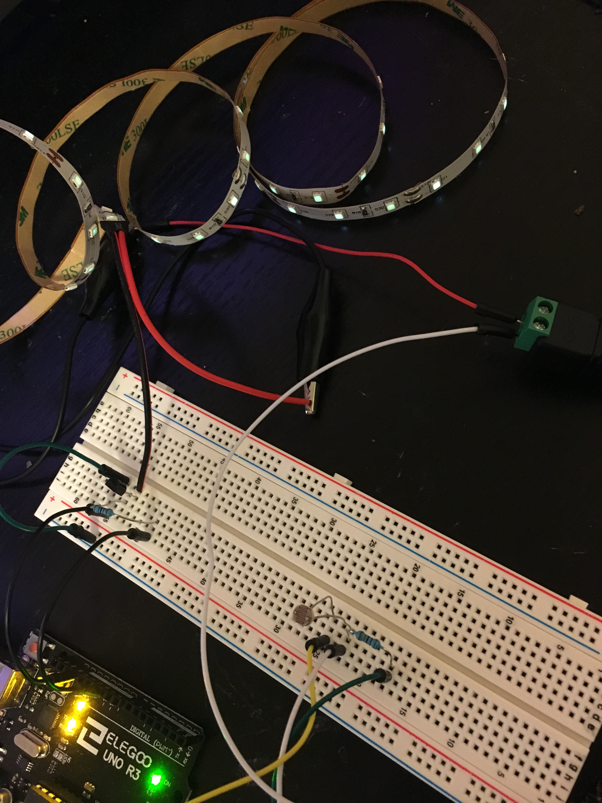
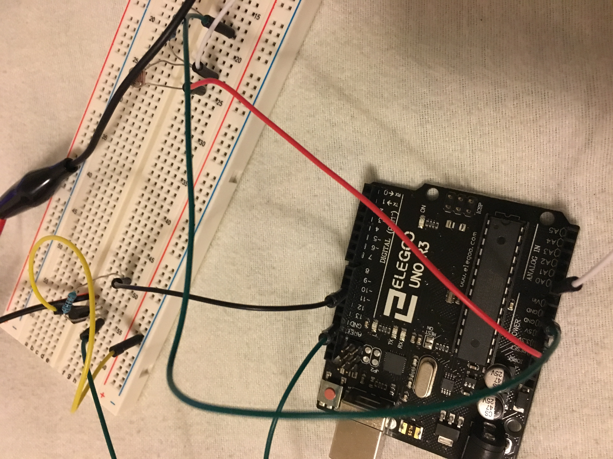
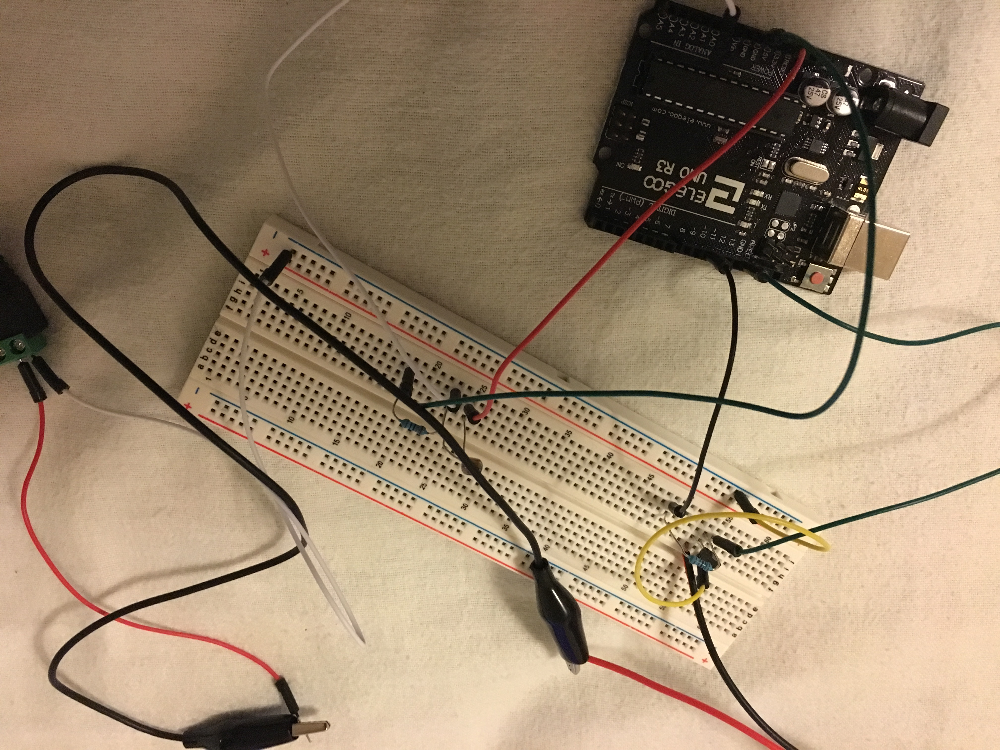
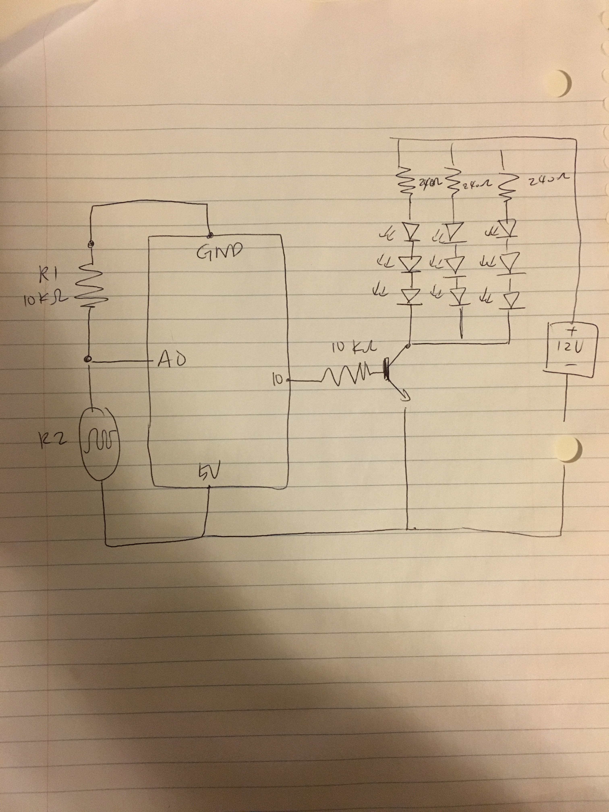
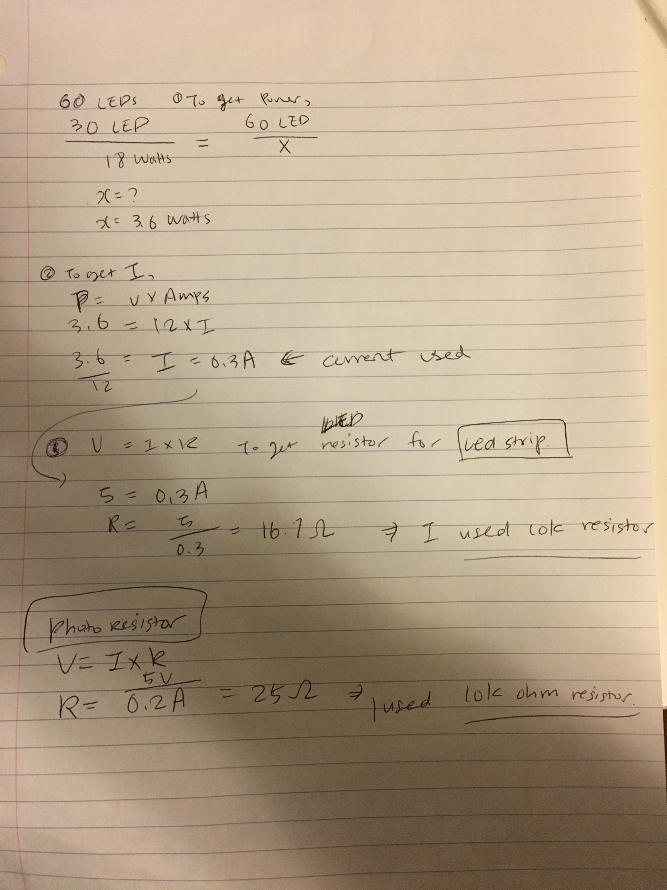

Fourth Assignment - High(er) voltage and transistors!
Circuit
  
Creating a schematic, circuit, and code that uses a transistor to control load power separate from logic power. You have to use analogWrite(), a high-load output device, and an input sensor
Schematic
Calculation

Firmware
//set pin numbers
const int ledPin = 10; //the number of the lED pin
const int ldrPin = A0; //the number of the LDR pin
int sensorValue = 0; // value read from the photoresistor
int outputValue = 0; // value output that is mapped out
void setup() {
// initialize serial communications at 9600 bps:
Serial.begin(9600);
//initialize the LED pin as an output
pinMode(ledPin, OUTPUT);
//initialize the LDR pin as an output
pinMode(ldrPin, INPUT);
}
void loop() {
// read the ldrLED in value
sensorValue = analogRead(ldrPin);
//map it to range of analog out
outputValue = map(sensorValue, 0, 1023, 0, 255);
// When output value is equal to or less than 200, turn the LED on
if (sensorValue <= 200) {
// turn on LED
digitalWrite(ledPin, HIGH);
Serial.println("LED is ON");
// if the output value is greater than to 200, turn the LED off
} else {
// turn off LED
analogWrite(ledPin, 0);
Serial.println("LED is OFF");
}
}
Circuit's operation

Tada! Once covering the area and minimizing exposed light near photoresister, this beautiful LED strip turns on!